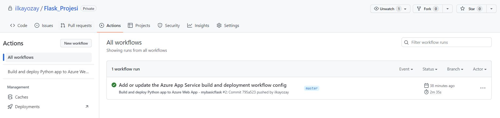

Bu yazı, bir Flask uygulamasının VS Code üzerinden Github ve Azure üzerinde nasıl yayınlanacağına dair bir rehber olması amacyla tasarlanmıştır. Burada amaç Flask uygulanmasına odaklanmak değil, hazır bir uygulamanın github ve cloud a servis edilmesi ile ilgilidir.
Hazırlıklar
-
Github Hesabının Oluşturulması
Flask uygulamasını Github üzerinden paylaşmak için bir Github hesabına ihtiyacımız var. Hesabınız yoksa Github'a kaydolmak için https://github.com/ adresine gidip kayıt işlemini tamamlayabilirsiniz.
-
VS Code Kurulumu
Flask uygulamasının kodlanması, Github'a yüklenmesi ve Azure Ortamı ile etkileşim VS Code üzerinde yapılacağı için VS Code'u bilgisayarınıza indirin ve yükleyin.
-
Sanal ortamın yaratılması
Öncelikle flask projesi için bir klasör yaratılmalıdır. Sonrasında bu klasör içine girip terminale geçiş yapılmalıdır.
Aşağıdaki komutlar ile uygulama bağımlılıklarının depolanacağı bir sanal ortamın oluşturulmasına sağlanacaktır
python -m venv .envSanal ortamı aktif hale getirin:
Windows içinenv\Scripts\activateLinux içinsource env/bin/activateSanal ortamda Flask paketini yüklemek için aşağıdaki komutu kullanacağız:
Ayrıca, uygulamanızda kullanacağınız diğer paketleri de benzer şekilde yükleyebilirsiniz.pip install flaskPaketleri yükledikten sonra, pip freeze komutunu kullanarak tüm bağımlılıkları requirements.txt dosyasına kaydedeceğiz:
pip freeze > requirements.txt -
Flask Uygulamasının Kodlanması
Proje klasörü içinde "app" adı altında bir klasör yaratcağız. Sonrasında onun içinde "static" ve "templates" adı altında 2 klasör daha yaratacağız. Ayrıca 3 tane de dosya yaratacağız. Görünüm şu şekildedir.

Kod içeren dosyalar ve kodlar aşağıdaki gibidir.
__init__.pyfrom flask import Flask, render_template app = Flask(__name__) @app.route('/') def index(): return render_template('index.html') if __name__ == "__main__": app.run(port=5000, debug=True)
index.html<!DOCTYPE html> <html> <head> <title>Merhaba Giriş Sayfası</title> <meta name="viewport" content="width=device-width, initial-scale=1"> <link rel="stylesheet" href="https://stackpath.bootstrapcdn.com/bootstrap/4.1.3/css/bootstrap.min.css"> </head> <body> <div class="container-fluid bg-light py-3"> <div class="container"> <div class="row"> <div class="col-md-12 text-center"> <h1 class="display-3 mb-2">Merhaba Flask ve Bootstrap!</h1> <p class="lead mb-5">Bu, Flask ve Bootstrap ile oluşturulan bir örnek sayfadır.</p> <a href="#" class="btn btn-primary btn-lg">Daha Fazla</a> </div> </div> </div> </div> <div class="container-fluid bg-dark text-white py-3"> <div class="container"> <div class="row"> <div class="col-md-12 text-center"> <br> <p class="mb-0">Daha fazla Flask ve Bootstrap örneği için <a href="#">buraya</a> tıklayın.</p> <br> </div> </div> </div> </div> </body> </html>
startup.pyfrom app import appKodlamayı bitirdiğimizde projeyi çalıştırabiliriz.
python __init__.py(env) D:\Workspace\Python\Flask\Flask_Projesi\app>python __init__.py * Serving Flask app '__init__' * Debug mode: on WARNING: This is a development server. Do not use it in a production deployment. Use a production WSGI server instead. * Running on http://127.0.0.1:5000 Press CTRL+C to quit * Restarting with stat * Debugger is active! * Debugger PIN: 278-563-770 127.0.0.1 - - [17/Mar/2023 00:04:28] "GET / HTTP/1.1" 200 -
Uygulamanın görüntüsü şu şekildedir.
-
Git yapılandırması
Projemizin Github yapılandırması bu aşamada olacak. Sonrasında yapacağımız her commit ile kodlarımız Github Repository'e atılmış olacak.
Öncelikle Github a yüklenmesini istemediğimiz dosya ve klasörlerin adını ".gitignore" dosyasına eklemeliyiz. Örneğin sanal ortam yada bir takım cache amaçlı klasörlerin Repository'e atılmasına gerek yoktur.

VS Code'un "Source Control" sekmesine gidip oradan "Initialize Repository" diyerek dosya ve klasölerimizi Git kapsamına almış olacağız. Esasında git yapılandırmasını terminalden de yapabiliriz ama burada VS Code'un bize sağladığı kolaylıktan faydalanmış olacağız.
Initialize Repository dediğimizde VS Code bizim için git yapılandırmasını hazır hale getirir. Esasında klasör içinde ".git" adında gizli bir klasör yaratılır. Commit tuşuna basmadan önce tuşun üstündeki alana "Açıklama girilir.Her commit aslında kodumuzun bir aşamasıdır ve ilerde bu aşamalar arasında geçiş yapma şansımız olacaktır. Bu nedenle aşamaların ne olduğunun anlaşılır bir şekilde yazılması önemlidir.

Commit tuşuna bastığımızda aşağıdaki gibi bir soru karşımıza gelir.

Bu mesaj, henüz değişikliklerin kaydedilmediğini veya sahneye konulmadığını (staged) belirtiyor. "There are no staged changes to commit" mesajı, değişikliklerin henüz sahneye konulmadığını gösterirken, "Would you like to stage all your changes and commit them directly?" mesajı, değişikliklerin sahneye konulup commit edilmesi için sizden onay istiyor.
Git'te, dosyaların değişikliklerini kaydetmek için iki aşama vardır. İlk olarak, değişikliklerinizi "sahneye koymalısınız" (stage), yani dosyaları değişiklikler için hazır hale getirmelisiniz. Bu işlem, git add komutuyla yapılır. Daha sonra, değişiklikleri "commit" ederek (yani kaydederek) Git deposuna göndermelisiniz. Bu işlem, git commit komutuyla yapılır.
Eğer henüz değişiklikleri sahneye koymadıysanız ve git commit komutunu çalıştırırsanız, Git size "There are no staged changes to commit" mesajını verir çünkü değişiklikler henüz sahneye konulmadı. Bu nedenle, Git değişiklikleri sahneye koymak isteyip istemediğinizi sorar.
Eğer "yes" derseniz, Git tüm değişiklikleri sahneye koyar ve hemen ardından commit işlemini gerçekleştirir. Böylece, hem dosyaların değişiklikleri kaydedilir hem de Git deposuna gönderilir.
Peki ne yapsaydık bu soru karşımıza gelmezdi
"Source Control" yan tarafındaki üç nokta (...) işaretine basınca açılan menüde Changes sekmesi altında "Stage All Changes" dersek bu işlem değişikliklerin sahneye (staging area) konmasını sağlar.

İlk commit işleminde dosyalar olduğu gibi içeri alınır ancak sonrasında her bir değişiklik loglanır bir nevi. Dosyalardaki bu değişikliğin detayı istenirse incelenebilir

Şu ana kadar yapılanların hepsi lokalde gizli ".git" klasörü içinde yapıldı. Şimdi projemizi artık remote bir repository'e atabiliriz. Bunun için Publish Branch diyeceğiz. Eğer VS Code'da Github'a login değilsek login olmamız istenecek

Sonrasında Github bize Repository adını soracak (Default değer olarak mevcut klasörümüzün adı gelir ama bunu değiştirebiliriz)

Github'da projemizin yaratıldığını görebiliriz

Dikkatli bakarsak "static" klasörünün Github'da olmadığını görürüz. Çünkü aslında git commit esnasında da bu klasör eklenmemişti.
Bunun nedeni, Git, boş bir klasörü doğrudan bir commit'e eklemeyi desteklemez. Böyle bir klasörü repository'nin içinde bulundurmak isterseniz, klasör içinde boş da olsa bir dosya oluşturmanız gerekir. Bu şekilde klasörü de stage'e alabilirsiniz.
-
Azure Hesabının Oluşturulması
Flask uygulamasının Azure ortamına deploy edilebilmesi için bir Azure hesabına ihtiyacımız var. Azure'a https://azure.microsoft.com/tr-tr/free/ adresinden kayıt olabilirsiniz.
-
VS Code Üzerinde Azure Tools Extension'larının yüklenmesi
Azure ortamında servisimizin yaratılması ve Github'la entegre bir şekilde Build ve Deployment süreçlerinin yapılabilmesi için gerekli olan extensionlar bu aşamada yüklenecek
Kurulumlar bittiğinde ekranda sol tarafta "A" harfinde yeni bir menü eklentisi görünecektir. Onu seçtiğimizde Azure ile ilgili yapabileceğimiz işlemler ekranda gözükecektir. Buradan Azur'a login olunmalıdır.
-
Azure üzerinde WEB App Service'in Yaratılması
Azure'da bir hesap açtığımızda bir subscription da yapılmış olacaktır. Bunun altında çeşitli seçenekler ekranda gözükür. Biz "App Services" seçeneği üstüne sağ tıkladığımıda gelen menüden "Create New App...(Advanced)" seçeneği ile ilerleyeceğiz. Buna tıkladığımızda sağ tarafta 6 adımdan oluşan bir seçim süreci başlayacaktır.
Sırasıyla adımlar şu şekildedir:

Ben burada B2 planını seçtim.Diğer türlü kapasite sorunu yaşama ihtimali var. Zaten hemen bu yazının sonrasında sistemi kapattım.
Bu adımı (7.Nolu) "Skip" deyip geçiyoruz.
Eğer tüm adımlar başarı ile biterse uygulamamız "App Services" altında gözükecek. Bu aşamada konfigürasyonu tamamlamak için uygulamaya sağ tıklıyoruz.
Açılan Azure sayfasında Configuration sekmesinde Startup Command alanını doldurmamız gerekiyor. Biz Azur'un Linux tabanlı bir sunucudan uygulamayı servis etmesini istediğimiz için ( bknz: 4.adım ) "gunicorn" ile Flask uygulaması ayağa kaldırılacak. Aşağıdaki komutta "0.0.0.0" kullanıldığında, uygulamaya sunucu dışından erişim olacak demektir. Böylece herhangi bir istemci, uygulamaya erişmek için sunucunun IP adresini kullanabilir.
Son olarak "startup:app" ile startup.py dosyasındaki app in çağrılması gerektiğini belirtiyoruz.
gunicorn --bind=0.0.0.0 --timeout=700 startup:appConfiguration sekmesinde başka bir şeyi değiştirmiyoruz ve artık son olarak Deployment Center sekmesine geçiyoruz.
Burada "*" ile işaretli olan zorunlu alanları aşağıdaki gibi seçiyoruz..
"Save" tuşuna bastığımız anda Azure, GitHub'la etkileşime geçecektir. Peki ne yapacaktır. Bu sorunun cevabı "Preview File" tuşuna basınca açılan YAML dosyasındadır. Save tuşuna basmadan önce bunu inceleyelim.
# Docs for the Azure Web Apps Deploy action: https://github.com/Azure/webapps-deploy # More GitHub Actions for Azure: https://github.com/Azure/actions # More info on Python, GitHub Actions, and Azure App Service: https://aka.ms/python-webapps-actions name: Build and deploy Python app to Azure Web App - mybasicflask on: push: branches: - master workflow_dispatch: jobs: build: runs-on: ubuntu-latest steps: - uses: actions/checkout@v2 - name: Set up Python version uses: actions/setup-python@v1 with: python-version: '3.9' - name: Create and start virtual environment run: | python -m venv venv source venv/bin/activate - name: Install dependencies run: pip install -r requirements.txt # Optional: Add step to run tests here (PyTest, Django test suites, etc.) - name: Upload artifact for deployment jobs uses: actions/upload-artifact@v2 with: name: python-app path: | . !venv/ deploy: runs-on: ubuntu-latest needs: build environment: name: 'production' url: ${{ steps.deploy-to-webapp.outputs.webapp-url }} steps: - name: Download artifact from build job uses: actions/download-artifact@v2 with: name: python-app path: . - name: 'Deploy to Azure Web App' uses: azure/webapps-deploy@v2 id: deploy-to-webapp with: app-name: 'mybasicflask' slot-name: 'production' publish-profile: ${{ secrets.AzureAppService_PublishProfile_e2fa9a39020845b4b1a4f47a966ff939 }}Bu dosya Github'a iletilecek olan ve Github workflow'unu tanımlayan dosyadır. Bu GitHub aksiyonu, bir Python uygulamasını Azure Web App'e nasıl dağıtacağınızı otomatikleştirmek için tasarlanmıştır. İş akışı(Workflow), "on:" sekmesinden anlaşılacağı üzere, "push" yapılarak (burada biz save tuşuna basmakla push etmiş olacağız) veya manuel olarak tetiklenebilen workflow_dispatch olayı ile çalıştırılır. İş akışının iki aşaması vardır: build (derleme) ve deploy (dağıtım).
Build aşaması, uygulamayı derleyerek ve gerekli bağımlılıkları kurarak bir sanal paket oluşturur. Sanal paket daha sonra bir "artifact" olarak yüklenir, böylece dağıtım aşamasında kullanılabilir hale getirilir. "Artifact" deiğimiz şey Github'dan indirebileeğimiz, bu projede en azından ZIP formatında ve içinde build edilmiş halde kodların bulunduğu bir dosyadır.Bizim projemiz python olduğu için aslında kodlarımız birebir halde bu dosya içindedir.
Deploy aşamasında ise, build aşamasında oluşturulan sanal paketi indirilir ve Azure Web App'e dağıtılır. Bu aşama, ubuntu-latest çalışma ortamında çalışır ("runs-on: ubuntu-latest" kısmından anlıyoruz) ve build aşamasına ihtiyaç duyar ("needs: build" kısmından anlıyoruz).
Biz workflow içerisine bir test tanımı yapmadık ama Depoloyment öncesi bir takım otomatik testler yapılabilirdi ("# Optional: Add step to run tests here (PyTest, Django test suites, etc.)" kısmında değinilen konu budur) .
"Save" tuşuna basıp hemen Github'a gelip projemizin "Actions" sekmesine baktığımızda çalışan bir workflow göreceğiz. Belirli bir süre çalıştıktan sonra eğer bir hata ile karşılaşmaz isek web uygulamamıza erişebilir hale gelmiş olacağız.
Ben başka bir projede hata almıştım. "Plan" kısmında "Free" bir makine seçmiştim ve onun disk kapasitesi yeterli olmamıştı. Sonra planı değiştirip tekrar worklow'u tetiklediğimde sorun düzeldi.
Workflow instance'ın içine girdiğimizde (Zamanla çok sayıda workflow instance'ı oluşabilir. Örneğin kodda bir değişiklik yapıp süreçleri işlettiğimizde yeni bir build ve deployment süreci işletilmiş olacaktır) "Build" ve "Deploy" aşamalarını görmüş oluruz.
Build sürecinde gerçekleştirilen eylemlerin ekran görüntüsüne erişmek için yukarıdaki ekranda "Build" yazan kısma tıklamak yeterlidir. Bu durumda aşağıdaki görüntüyü görmüş oluruz.
Burada genel olarak öncelikle python sanal ortamı yaratılıyor ve "requirement.txt" dosyasında yer alan paketler sisteme yükleniyor. Sonrasında kodlar Zip'lenip "Artifact" haline getiriliyor. Bu işler normal olarak Github tarafından Azure Makinesine yaptırılıyor. Sonrasında ise "Artifact" dosyası Github'a Upload ediliyor.
Artifact dosyasına "workflow" içinde en alt kısımdan erişebilirsiniz.
Artifact dosyalar Github'da belirli bir süre saklanır. Ne kadar saklanacağı ayarlar kısmından değiştirilebilir.
Benzer şekilde "Deploy" aşamasınında alt adımlar da detaylı bir şekilde incelenebilir.
Build ve deploy sürelerine Github üzerinden erişilebilir.
Yazının başında development aşamasında eriştiğimiz ekrana artık Azure üzerinden "http://mybasicflask.azurewebsites.net/" linkinden erişebilir olduk. Bu link şu an çalışmaz çünkü yaz bittiğinde ben mevcut sunucuyu kapatmış olacağım.
Uygulamanın productiondaki son görüntüsü şu şekildedir.